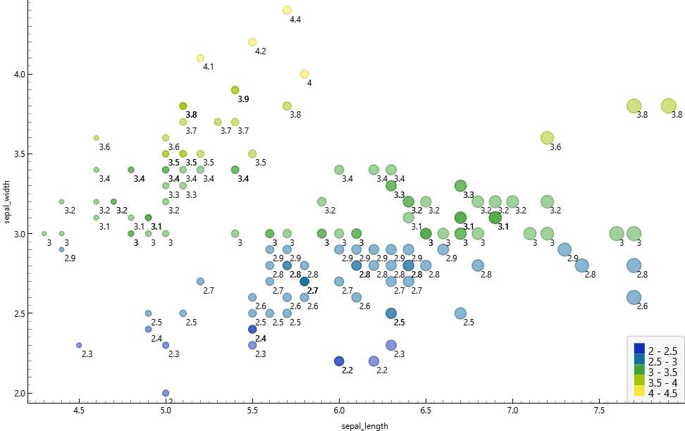
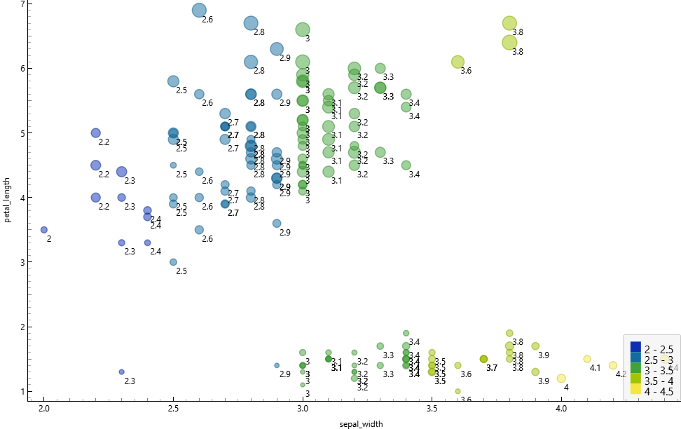
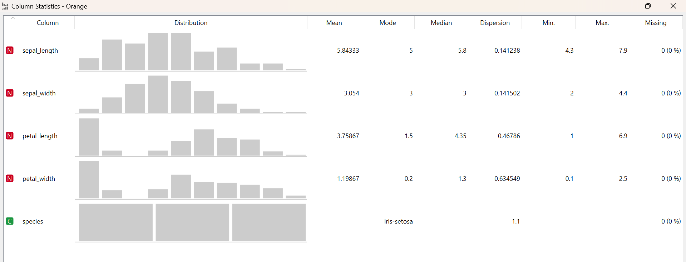
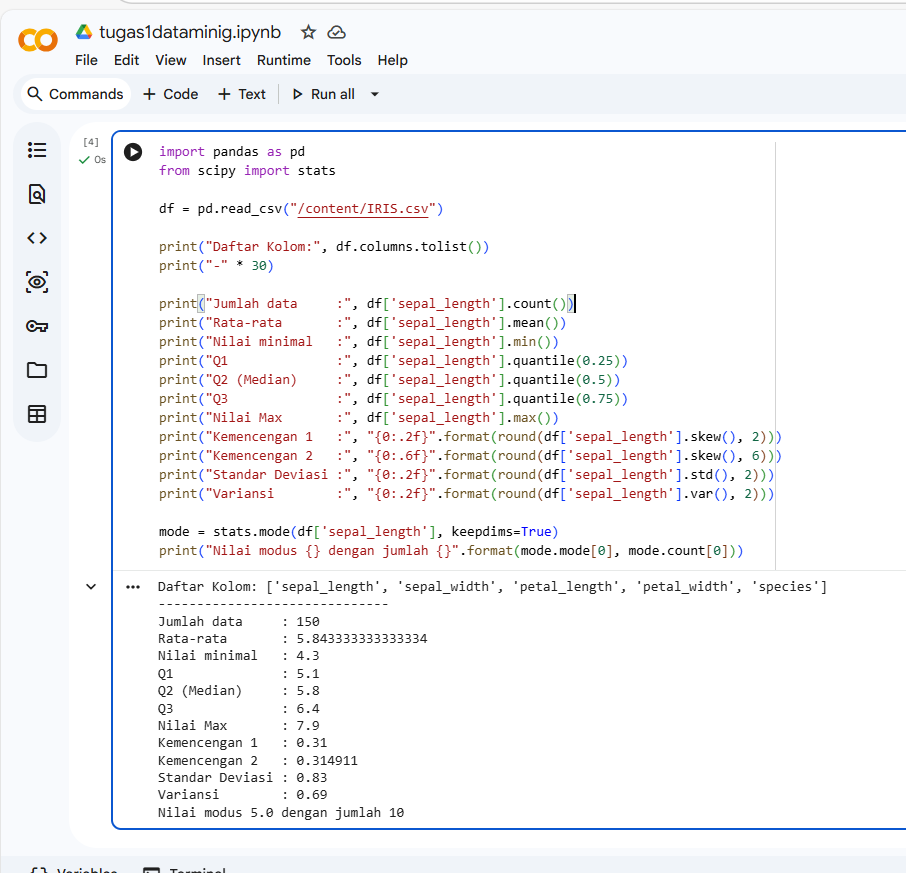
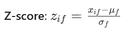
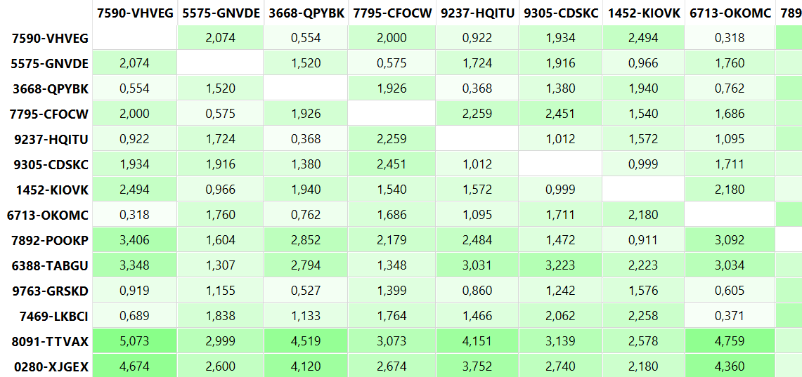
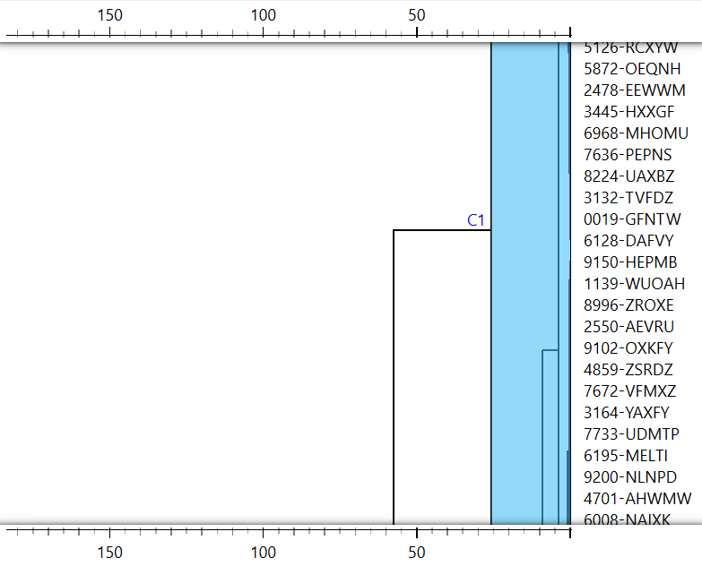
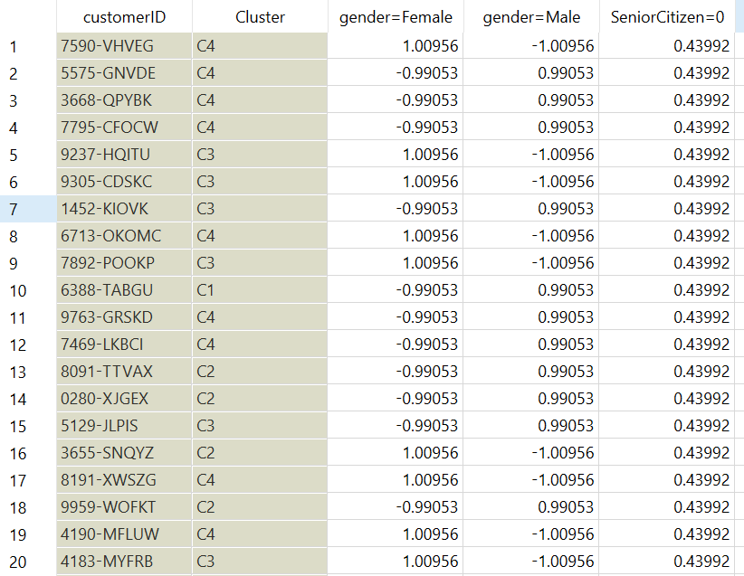

Data Understanding#
Tugas Pertama#
Korelasi antara sepallength dan sepalwidth#

Dari gambar di atas menunjukkan bahwa korelasi antara sepal_length pada sumbu horizontal dan sepal_width pada sumbu vertikal secara keseluruhan terlihat cukup lemah dan menyebar. Berbeda dengan pola linear yang kuat, titik-titik data pada grafik ini tidak membentuk garis lurus yang rapat dari kiri bawah ke kanan atas, yang berarti bertambah besarnya nilai sepal_length tidak selalu berbanding lurus dengan bertambahnya nilai sepal_width. Meskipun korelasi keseluruhannya lemah, kita bisa melihat adanya pengelompokan atau cluster data yang sangat jelas dan tidak menyebabkan ambigu. Di area kiri atas, terdapat sekumpulan titik data yang didominasi warna kuning dan hijau muda, menunjukkan nilai sepal_width yang tinggi berkisar antara 3.4 hingga 4.4, namun memiliki sepal_length yang cenderung pendek yakni di bawah 5.5. Sementara itu, di bagian tengah hingga kanan bawah terdapat kumpulan data yang jauh lebih menyebar dengan dominasi warna biru dan hijau tua, yang merepresentasikan nilai sepal_width lebih rendah antara 2.0 hingga 3.4 tetapi membentang dengan sepal_length yang jauh lebih panjang hingga melebihi angka 7.5. Pemisahan cluster yang sangat kontras ini kemungkinan besar merepresentasikan spesies bunga iris yang berbeda, di mana kelompok kiri atas dengan sepal lebar namun pendek biasanya merupakan karakteristik khas dari spesies Iris setosa yang terpisah jelas dari spesies lainnya. Visualisasi ini juga dibuat semakin informatif melalui penggunaan warna yang memperjelas rentang kategori nilai sepal_width sesuai dengan legenda di sudut kanan bawah, serta pemanfaatan ukuran titik lingkaran yang tampak semakin membesar seiring dengan bertambahnya posisi titik ke arah kanan.Korelasi antara petallengt dan petalwidth#
 Dari gambar di atas menunjukkan bahwa korelasi antara petal_length pada sumbu horizontal dan petal_width pada sumbu vertikal sangat kuat dan positif. Hal ini dikarenakan titik-titik data membentuk pola garis yang sangat jelas membentang dari arah kiri bawah ke kanan atas, menunjukkan bahwa semakin besar nilai petal_length, maka secara konsisten akan diikuti dengan semakin besarnya pula nilai petal_width. Artinya, kedua variabel tersebut sangat rapat membentuk pola linear yang berbanding lurus. Dari sebaran data ini juga terlihat sangat jelas terdapat dua cluster utama yang terpisah cukup jauh dan sama sekali tidak menyebabkan ambigu. Di area pojok kiri bawah, terdapat sebuah cluster yang sangat terisolasi dengan nilai petal_length yang pendek (berkisar 1 hingga 2) dan petal_width yang sempit (berada di bawah angka 0.7), yang didominasi oleh titik berwarna hijau muda dan kuning. Sementara itu, kelompok data kedua membentang dari area tengah terus naik hingga ke kanan atas, memiliki nilai panjang dan lebar petal yang jauh lebih besar serta didominasi oleh warna biru hingga hijau tua. Pemisahan ruang kosong yang sangat tegas antara cluster kecil di kiri bawah dengan kelompok besar di atasnya ini kemungkinan besar merepresentasikan spesies bunga iris yang berbeda secara morfologi dan sangat mudah untuk diklasifikasikan. Sama seperti sebelumnya, visualisasi ini juga dilengkapi dengan variasi ukuran titik dan rentang warna yang memberikan informasi tambahan mengenai dimensi data lainnya sesuai dengan legenda di sudut kanan bawah.
Dari gambar di atas menunjukkan bahwa korelasi antara petal_length pada sumbu horizontal dan petal_width pada sumbu vertikal sangat kuat dan positif. Hal ini dikarenakan titik-titik data membentuk pola garis yang sangat jelas membentang dari arah kiri bawah ke kanan atas, menunjukkan bahwa semakin besar nilai petal_length, maka secara konsisten akan diikuti dengan semakin besarnya pula nilai petal_width. Artinya, kedua variabel tersebut sangat rapat membentuk pola linear yang berbanding lurus. Dari sebaran data ini juga terlihat sangat jelas terdapat dua cluster utama yang terpisah cukup jauh dan sama sekali tidak menyebabkan ambigu. Di area pojok kiri bawah, terdapat sebuah cluster yang sangat terisolasi dengan nilai petal_length yang pendek (berkisar 1 hingga 2) dan petal_width yang sempit (berada di bawah angka 0.7), yang didominasi oleh titik berwarna hijau muda dan kuning. Sementara itu, kelompok data kedua membentang dari area tengah terus naik hingga ke kanan atas, memiliki nilai panjang dan lebar petal yang jauh lebih besar serta didominasi oleh warna biru hingga hijau tua. Pemisahan ruang kosong yang sangat tegas antara cluster kecil di kiri bawah dengan kelompok besar di atasnya ini kemungkinan besar merepresentasikan spesies bunga iris yang berbeda secara morfologi dan sangat mudah untuk diklasifikasikan. Sama seperti sebelumnya, visualisasi ini juga dilengkapi dengan variasi ukuran titik dan rentang warna yang memberikan informasi tambahan mengenai dimensi data lainnya sesuai dengan legenda di sudut kanan bawah.
Korelasi antara sepallength dan petallength#
 Dari gambar di atas menunjukkan bahwa korelasi antara sepal_length pada sumbu horizontal dan petal_length pada sumbu vertikal bernilai positif dan terbilang cukup kuat. Hal ini terlihat dari titik-titik data yang membentuk pola diagonal melintang dari arah kiri bawah menuju kanan atas, yang mengindikasikan bahwa pertambahan panjang pada sepal secara umum berbanding lurus dengan pertambahan panjang pada petal. Dari persebaran data tersebut, kita kembali disuguhkan dengan pemandangan dua cluster utama yang terpisah dengan sangat tegas dan sama sekali tidak menyebabkan ambigu. Di area paling bawah, terdapat sebuah kelompok data mendatar yang memiliki sepal_length bervariasi antara kisaran 4.0 hingga hampir 6.0, namun memiliki petal_length yang stagnan dan sangat pendek di kisaran angka 1 hingga 2. Menariknya, cluster bawah ini sangat didominasi oleh titik-titik berwarna kuning dan hijau muda, yang menurut legenda di sudut kanan bawah menandakan dimensi data pelengkapnya bernilai tinggi. Sebaliknya, kelompok data yang lain tersebar membentang menanjak dari area tengah hingga memuncak di kanan atas, merepresentasikan karakteristik bunga dengan ukuran sepal dan petal yang jauh lebih panjang, yang umumnya diwarnai oleh gradasi biru hingga hijau tua. Jarak kosong yang memisahkan kelompok bawah yang mendatar dengan kelompok atas yang menanjak ini kembali menjadi indikator kuat yang merepresentasikan perbedaan spesies bunga iris yang sangat spesifik. Visualisasi ini pun tetap konsisten memanfaatkan variasi warna dan ukuran lingkaran untuk memberikan kedalaman informasi tambahan dalam satu pandangan mata secara komprehensif.
Dari gambar di atas menunjukkan bahwa korelasi antara sepal_length pada sumbu horizontal dan petal_length pada sumbu vertikal bernilai positif dan terbilang cukup kuat. Hal ini terlihat dari titik-titik data yang membentuk pola diagonal melintang dari arah kiri bawah menuju kanan atas, yang mengindikasikan bahwa pertambahan panjang pada sepal secara umum berbanding lurus dengan pertambahan panjang pada petal. Dari persebaran data tersebut, kita kembali disuguhkan dengan pemandangan dua cluster utama yang terpisah dengan sangat tegas dan sama sekali tidak menyebabkan ambigu. Di area paling bawah, terdapat sebuah kelompok data mendatar yang memiliki sepal_length bervariasi antara kisaran 4.0 hingga hampir 6.0, namun memiliki petal_length yang stagnan dan sangat pendek di kisaran angka 1 hingga 2. Menariknya, cluster bawah ini sangat didominasi oleh titik-titik berwarna kuning dan hijau muda, yang menurut legenda di sudut kanan bawah menandakan dimensi data pelengkapnya bernilai tinggi. Sebaliknya, kelompok data yang lain tersebar membentang menanjak dari area tengah hingga memuncak di kanan atas, merepresentasikan karakteristik bunga dengan ukuran sepal dan petal yang jauh lebih panjang, yang umumnya diwarnai oleh gradasi biru hingga hijau tua. Jarak kosong yang memisahkan kelompok bawah yang mendatar dengan kelompok atas yang menanjak ini kembali menjadi indikator kuat yang merepresentasikan perbedaan spesies bunga iris yang sangat spesifik. Visualisasi ini pun tetap konsisten memanfaatkan variasi warna dan ukuran lingkaran untuk memberikan kedalaman informasi tambahan dalam satu pandangan mata secara komprehensif.
Korelasi antara sepallength dan petalwidth#
 Dari gambar di atas menunjukkan bahwa korelasi antara sepal_length pada sumbu horizontal dan petal_width pada sumbu vertikal bernilai positif dan terlihat cukup kuat. Hal ini terlihat dari titik-titik data yang membentuk pola pergerakan menanjak dari arah kiri bawah menuju kanan atas, yang mengindikasikan bahwa semakin bertambahnya panjang sepal, maka cenderung akan diikuti pula dengan peningkatan ukuran lebar pada petal. Dari persebaran data tersebut, kita kembali dapat melihat dengan jelas adanya dua cluster utama yang terpisah secara tegas dan tidak menyebabkan ambigu. Di area paling bawah, terdapat sebuah kelompok data yang menggerombol dengan nilai petal_width yang sangat sempit di bawah angka 0.7, serta sepal_length yang berada di kisaran 4.3 hingga 5.8. Menariknya, cluster bagian bawah ini kembali didominasi oleh titik-titik berwarna kuning dan hijau muda, yang merujuk pada legenda di sudut kanan bawah sebagai penanda bahwa dimensi data pelengkapnya (sepal_width) bernilai cukup tinggi. Sementara itu, kelompok data yang kedua tersebar jauh lebih luas dan menanjak dari area tengah hingga memuncak di kanan atas, merepresentasikan karakteristik bunga dengan ukuran panjang sepal dan lebar petal yang jauh lebih besar, serta umumnya diwarnai oleh gradasi biru hingga hijau tua yang menandakan ukuran sepal_width lebih rendah hingga menengah. Jarak kosong yang memisahkan kelompok bawah dengan kelompok atas yang menanjak ini kembali menjadi bukti visual yang sangat kuat untuk merepresentasikan perbedaan spesies bunga iris yang spesifik. Visualisasi scatter plot ini pun tetap konsisten dalam memanfaatkan variasi warna dan ukuran lingkaran untuk menyajikan kedalaman informasi dari berbagai variabel sekaligus secara komprehensif dalam satu tampilan.
Dari gambar di atas menunjukkan bahwa korelasi antara sepal_length pada sumbu horizontal dan petal_width pada sumbu vertikal bernilai positif dan terlihat cukup kuat. Hal ini terlihat dari titik-titik data yang membentuk pola pergerakan menanjak dari arah kiri bawah menuju kanan atas, yang mengindikasikan bahwa semakin bertambahnya panjang sepal, maka cenderung akan diikuti pula dengan peningkatan ukuran lebar pada petal. Dari persebaran data tersebut, kita kembali dapat melihat dengan jelas adanya dua cluster utama yang terpisah secara tegas dan tidak menyebabkan ambigu. Di area paling bawah, terdapat sebuah kelompok data yang menggerombol dengan nilai petal_width yang sangat sempit di bawah angka 0.7, serta sepal_length yang berada di kisaran 4.3 hingga 5.8. Menariknya, cluster bagian bawah ini kembali didominasi oleh titik-titik berwarna kuning dan hijau muda, yang merujuk pada legenda di sudut kanan bawah sebagai penanda bahwa dimensi data pelengkapnya (sepal_width) bernilai cukup tinggi. Sementara itu, kelompok data yang kedua tersebar jauh lebih luas dan menanjak dari area tengah hingga memuncak di kanan atas, merepresentasikan karakteristik bunga dengan ukuran panjang sepal dan lebar petal yang jauh lebih besar, serta umumnya diwarnai oleh gradasi biru hingga hijau tua yang menandakan ukuran sepal_width lebih rendah hingga menengah. Jarak kosong yang memisahkan kelompok bawah dengan kelompok atas yang menanjak ini kembali menjadi bukti visual yang sangat kuat untuk merepresentasikan perbedaan spesies bunga iris yang spesifik. Visualisasi scatter plot ini pun tetap konsisten dalam memanfaatkan variasi warna dan ukuran lingkaran untuk menyajikan kedalaman informasi dari berbagai variabel sekaligus secara komprehensif dalam satu tampilan.
Korelasi antara sepalwidth dan petallength#

Dari gambar di atas menunjukkan bahwa korelasi antara sepal_width pada sumbu horizontal dan petal_length pada sumbu vertikal terlihat cenderung menyebar dan terpisah, bahkan bisa dibilang memiliki korelasi negatif yang lemah secara keseluruhan jika ditarik garis lurus. Hal ini terlihat dari titik-titik data yang sama sekali tidak membentuk pola garis linear yang rapi, melainkan terpecah ke dalam ruang yang berbeda. Dari persebaran data tersebut, kita kembali dapat melihat dengan sangat jelas adanya dua cluster utama yang terpisah secara tegas dan tidak menyebabkan ambigu. Di area kanan bawah, terdapat sebuah kelompok data mendatar yang menggerombol padat dengan nilai petal_length yang sangat pendek di kisaran angka 1 hingga 2, namun memiliki sepal_width yang terbilang lebar yakni membentang dari kisaran 3.0 hingga melebihi 4.0. Menariknya, cluster bagian bawah ini sangat didominasi oleh titik-titik berwarna hijau muda dan kuning, yang merujuk pada legenda di sudut kanan bawah memang merepresentasikan tingginya rentang nilai pada kelompok tersebut. Sementara itu, kelompok data yang lain tersebar jauh lebih luas dari area kiri tengah hingga melambung ke atas, merepresentasikan karakteristik bunga dengan ukuran panjang petal yang jauh lebih besar mulai dari angka 3 hingga mendekati 7, namun dengan ukuran sepal_width yang cenderung lebih sempit hingga menengah di kisaran 2.0 hingga 3.4. Kelompok yang melayang di atas ini umumnya diwarnai oleh gradasi biru hingga hijau tua. Ruang kosong vertikal yang sangat kentara dalam memisahkan kelompok bawah yang terisolasi dengan kelompok atas yang menyebar luas ini kembali menjadi bukti visual yang kuat untuk merepresentasikan perbedaan spesies bunga iris yang spesifik secara morfologi. Visualisasi scatter plot ini tetap konsisten menyajikan pengelompokan yang tegas dengan memanfaatkan variasi warna dan ukuran titik untuk memperjelas rentang nilai data secara komprehensif dalam satu tampilan.Korelasi antara sepalwidth dan petalwidth#
 Dari gambar di atas menunjukkan bahwa korelasi antara sepal_width pada sumbu horizontal dan petal_width pada sumbu vertikal secara keseluruhan terlihat menyebar dan terpisah, tidak membentuk korelasi linear yang kuat. Hal ini terlihat dari titik-titik data yang terpecah ke dalam area yang berbeda dan tidak membentuk satu pola garis yang utuh. Dari persebaran data tersebut, kita kembali dapat melihat dengan sangat jelas adanya dua cluster utama yang terpisah secara tegas dan sama sekali tidak menyebabkan ambigu. Di area kanan bawah, terdapat sebuah kelompok data mendatar yang menggerombol padat dengan nilai petal_width yang sangat sempit di kisaran angka 0.1 hingga 0.6, namun memiliki sepal_width yang terbilang lebar yakni membentang dari kisaran 3.0 hingga melebihi 4.0. Menariknya, cluster bagian bawah ini sangat didominasi oleh titik-titik berwarna hijau muda dan kuning, yang merujuk pada legenda di sudut kanan bawah merepresentasikan tingginya rentang nilai pada kelompok tersebut. Sementara itu, kelompok data yang lain tersebar jauh lebih luas menempati area kiri tengah hingga melambung ke atas, merepresentasikan karakteristik bunga dengan ukuran lebar petal yang jauh lebih besar mulai dari angka 1.0 hingga mendekati 2.5, namun dengan rentang ukuran sepal_width yang bervariasi dari sempit hingga menengah di kisaran 2.0 hingga mendekati 3.5. Kelompok yang berada di atas ini didominasi oleh gradasi warna biru hingga hijau tua. Ruang kosong mendatar yang sangat kentara dalam memisahkan kelompok bawah yang terisolasi dengan kelompok atas yang menyebar luas ini menjadi bukti visual terakhir yang sangat kuat untuk merepresentasikan perbedaan spesies bunga iris yang spesifik secara morfologi. Visualisasi scatter plot ini tetap konsisten menyajikan pengelompokan yang tegas dengan memanfaatkan variasi warna dan ukuran titik untuk memperjelas rentang nilai data secara komprehensif dalam satu pandangan.
Dari gambar di atas menunjukkan bahwa korelasi antara sepal_width pada sumbu horizontal dan petal_width pada sumbu vertikal secara keseluruhan terlihat menyebar dan terpisah, tidak membentuk korelasi linear yang kuat. Hal ini terlihat dari titik-titik data yang terpecah ke dalam area yang berbeda dan tidak membentuk satu pola garis yang utuh. Dari persebaran data tersebut, kita kembali dapat melihat dengan sangat jelas adanya dua cluster utama yang terpisah secara tegas dan sama sekali tidak menyebabkan ambigu. Di area kanan bawah, terdapat sebuah kelompok data mendatar yang menggerombol padat dengan nilai petal_width yang sangat sempit di kisaran angka 0.1 hingga 0.6, namun memiliki sepal_width yang terbilang lebar yakni membentang dari kisaran 3.0 hingga melebihi 4.0. Menariknya, cluster bagian bawah ini sangat didominasi oleh titik-titik berwarna hijau muda dan kuning, yang merujuk pada legenda di sudut kanan bawah merepresentasikan tingginya rentang nilai pada kelompok tersebut. Sementara itu, kelompok data yang lain tersebar jauh lebih luas menempati area kiri tengah hingga melambung ke atas, merepresentasikan karakteristik bunga dengan ukuran lebar petal yang jauh lebih besar mulai dari angka 1.0 hingga mendekati 2.5, namun dengan rentang ukuran sepal_width yang bervariasi dari sempit hingga menengah di kisaran 2.0 hingga mendekati 3.5. Kelompok yang berada di atas ini didominasi oleh gradasi warna biru hingga hijau tua. Ruang kosong mendatar yang sangat kentara dalam memisahkan kelompok bawah yang terisolasi dengan kelompok atas yang menyebar luas ini menjadi bukti visual terakhir yang sangat kuat untuk merepresentasikan perbedaan spesies bunga iris yang spesifik secara morfologi. Visualisasi scatter plot ini tetap konsisten menyajikan pengelompokan yang tegas dengan memanfaatkan variasi warna dan ukuran titik untuk memperjelas rentang nilai data secara komprehensif dalam satu pandangan.
statistik deskriptif#

Dari gambar tabel Column Statistics tersebut, ditampilkan ringkasan data numerik komprehensif sekaligus visualisasi distribusi histogram untuk empat fitur dimensi bunga iris beserta satu kolom target kategorikal. Seluruh kolom secara konsisten menunjukkan angka nol persen pada bagian missing value, yang mengartikan bahwa dataset ini sepenuhnya utuh dan sangat bersih untuk dilakukan tahap pemodelan lebih lanjut. Kolom sepal_length memiliki rentang nilai terluas yang membentang dari 4.3 hingga 7.9 dengan rata-rata 5.84, sementara sepal_width memiliki sebaran yang lebih memusat pada rentang 2.0 hingga 4.4 dengan nilai median dan modus yang seragam berpusat di angka 3. Hal yang paling menonjol dan menjadi konfirmasi absolut dari rentetan analisis scatter plot sebelumnya terlihat sangat jelas pada visualisasi grafik distribusi untuk variabel petal_length dan petal_width. Pada kedua kolom dimensi kelopak tersebut, grafik distribusinya tidak membentuk kurva normal melainkan terpecah secara ekstrem, di mana terdapat sebuah batang histogram yang menjulang sangat tinggi terisolasi di ujung paling kiri. Batang dominan di sebelah kiri ini merepresentasikan tingginya frekuensi kemunculan data yang menumpuk pada rentang nilai yang sangat rendah, sejalan dengan angka modus petal_length yang anjlok di angka 1.5 dan petal_width di 0.2. Penumpukan frekuensi pada nilai batas bawah ini secara langsung berkorelasi dengan spesies Iris-setosa yang juga tercatat menempati posisi modus pada kolom kategorikal spesies di bagian paling bawah dengan visualisasi tiga blok distribusi yang seimbang. Pola histogram yang terbelah tegas ini secara visual maupun matematis membuktikan keberadaan sebuah cluster terisolasi yang selalu memisahkan diri di area bawah pada grafik-grafik sebaran data sebelumnya, yang mendeskripsikan karakteristik morfologi ukuran kelopak yang jauh lebih kecil dan seragam khusus untuk kelompok spesies Iris-setosa.Collan#

Eksekusi kode pemrograman Python di Google Colab diatas pada dasarnya merupakan pembuktian matematis secara manual yang selaras sempurna dengan hasil ringkasan perangkat lunak Orange pada tugas Anda sebelumnya. Angka-angka statistik deskriptif yang dihasilkan dari baris skrip untuk atribut sepal_length secara presisi memvalidasi dan mengonfirmasi tabel Column Statistics yang telah kita bedah bersama. Sebagai buktinya, output terminal Colab menunjukkan nilai rata-rata sepal_length sebesar 5.84, nilai minimum 4.3, nilai maksimum 7.9, serta nilai tengah atau median di angka 5.8, yang mana seluruh metrik matematis ini sama persis tanpa ada perbedaan sedikit pun dengan deretan angka yang tercetak pada antarmuka tabel Orange tersebut. Bahkan, perhitungan fungsi statistik dari pustaka SciPy yang menghasilkan nilai modus 5.0 dengan frekuensi kemunculan sepuluh kali juga sepenuhnya akurat mengikuti angka modus yang tertera di perangkat lunak penambangan data tersebut. Lebih jauh lagi, jika kita menengok kembali rentetan grafik scatter plot yang paling awal Anda unggah, hasil perhitungan metrik sebaran dengan rentang nilai dari 4.3 hingga 7.9 serta standar deviasi 0.83 ini memberikan landasan kuantitatif yang solid mengenai mengapa sumbu sepal_length selalu terlihat paling panjang membentang dan menyebar luas dibandingkan dimensi atribut lainnya saat divisualisasikan dalam bentuk titik-titik koordinat. Dengan kata lain, skrip pemrograman berbasis library Pandas dan SciPy yang Anda jalankan ini bertindak sebagai fondasi eksplorasi data tingkat dasar untuk mereplikasi sekaligus menguji secara komputasional kebenaran dari apa yang telah dirangkum secara otomatis dan divisualisasikan secara apik oleh perangkat lunak Orange dalam keseluruhan tugas penambangan data Anda Kunjungi collab sayaTugas Kedua#
penjelasan mengukur Jarak dengan tipe data campuran#
Latar Belakang#
Dalam penerapan di dunia nyata, data yang dianalisis umumnya terdiri atas beragam tipe atribut yang digabungkan dalam satu dataset. Misalnya, terdapat atribut nominal seperti warna atau kategori produk, atribut biner simetris seperti jenis kelamin, atribut biner asimetris seperti hasil pemeriksaan medis (Y/T), atribut numerik berbentuk interval atau rasio seperti suhu dan pendapatan, serta atribut ordinal yang menunjukkan tingkatan, seperti level kepuasan atau tingkat pendidikan.
Perbedaan karakteristik dan skala pengukuran pada tiap tipe data tersebut menyebabkan kita tidak bisa menggunakan satu formula jarak yang sama untuk semuanya. Setiap jenis atribut memerlukan cara perhitungan yang disesuaikan dengan sifat datanya agar hasilnya relevan.
Untuk mengatasi hal tersebut, digunakan pendekatan jarak campuran dengan mekanisme pembobotan. Prosesnya dilakukan dengan menghitung jarak masing-masing atribut berdasarkan tipenya, kemudian mengintegrasikan seluruh hasil tersebut ke dalam satu perhitungan akhir yang memperhatikan bobot dan validitas setiap atribut. Melalui pendekatan ini, kontribusi setiap jenis data menjadi lebih proporsional, sehingga nilai jarak yang dihasilkan mampu menggambarkan kondisi data secara lebih tepat dan realistis.
Rumus mengukur jarak data campuran#

Keterangan:
simbol penjelasan d(i,j) Jarak antara objek i dan j p umlah total atribut δ ij (f) Indikator: 1 jika atribut ke-f valid untuk dibandingkan, 0 jika tidak (misal: data missing) d ij (f) Jarak untuk atribut ke-f saja
Cara Menghitung d(f)ij per Tipe Atribut#
1. Atribut Nominal atau Binary#
ij(f) = 0, jika xif = xjf (nilai sama)
dij(f) = 1, jika xif ≠ xjf (nilai berbeda)
cara penghitungannya Menggunakan metode simple matching.
2. Atribut Numerik#
Lakukan normalisasi terlebih dahulu agar skala seragam, misalnya dengan:

Mean Absolute Deviation: lebih robust terhadap outlierSetelah dinormalisasi, hitung jarak dengan metode numerik (Euclidean, Manhattan, dll).
Atribut Ordinal#
Langkah-langkah:
Ganti nilai dengan ranking r i f (misal: rendah=1, sedang=2, tinggi=3)
 Hitung jarak menggunakan metode numerik pada nilai z i f
Hitung jarak menggunakan metode numerik pada nilai z i f
analisi mengunakan orange data mining untuk data yang campuran#
contoh data saya untuk menganalisis penghitungan jarak di orange
 Widget Distances digunakan untuk menghitung matriks dissimilarity (jarak) antar objek dalam dataset. arameter Compare diset ke Rows yang berarti perhitungan jarak dilakukan antar objek/data point (baris dalam dataset), bukan antar atribut. Hal ini sesuai dengan konsep matriks dissimilarity, dimana matriks segitiga dihasilkan dari perhitungan jarak antar n titik data. Metric jarak yang dipilih adalah Manhattan (normalized) karena data yang saya pakai memiliki data campuran
Widget Distances digunakan untuk menghitung matriks dissimilarity (jarak) antar objek dalam dataset. arameter Compare diset ke Rows yang berarti perhitungan jarak dilakukan antar objek/data point (baris dalam dataset), bukan antar atribut. Hal ini sesuai dengan konsep matriks dissimilarity, dimana matriks segitiga dihasilkan dari perhitungan jarak antar n titik data. Metric jarak yang dipilih adalah Manhattan (normalized) karena data yang saya pakai memiliki data campuran

Gambar tersebut menampilkan Matriks Dissimilarity (Distance Matrix) yang dihasilkan melalui widget Distance Matrix pada Orange Data Mining. matriks ini berbentuk segitiga (single mode) yang memuat data jarak antar n titik data. Struktur matriks ini bersifat simetris, dimana jarak antara objek i ke objek j sama dengan jarak objek j ke objek i atau d(i,j) = d(j,i), dan memiliki nilai diagonal nol yang menunjukkan jarak objek terhadap dirinya sendiri. nilai dissimilarity dalam matriks ini merupakan ukuran numerik dari perbedaan dua objek data. Interpretasi nilai jarak mengikuti prinsip dimana nilai yang sangat rendah menunjukkan benda yang lebih mirip, sedangkan nilai yang tinggi menunjukkan perbedaan yang besar. Hal ini terlihat jelas pada data pelanggan dalam matriks. Sebagai contoh, jarak antara customer 7590-VHVEG dan 5575-GNVDE adalah 2,074, yang menunjukkan tingkat perbedaan sedang. Namun, customer 7590-VHVEG memiliki nilai jarak yang lebih kecil yaitu 0,554 terhadap customer 3668-QPYBK, yang mengindikasikan bahwa kedua customer tersebut memiliki karakteristik yang sangat mirip. Sebaliknya, perbedaan yang signifikan terlihat pada pasangan customer 8091-TTVAX dan 3668-QPYBK yang memiliki nilai jarak sebesar 4,519. Nilai yang besar ini menandakan bahwa kedua objek tersebut sangat berbeda secara karakteristik. Secara keseluruhan, matriks ini memenuhi sifat-sifat jarak yaitu positive definiteness (nilai > 0 untuk objek berbeda), symmetry, dan triangle inequality. Hasil matriks dissimilarity ini menjadi dasar utama untuk tahapan selanjutnya yaitu Hierarchical Clustering dalam mengelompokkan pelanggan berdasarkan kemiripan karakteristiknya.

Berdasarkan dendrogram, hierarchical clustering dilakukan dengan metode linkage Ward dan menghasilkan 4 cluster optimal. Pemotongan dendrogram dilakukan pada ketinggian tertentu sehingga diperoleh:Cluster 1: sejumlah X customer, Cluster 2: sejumlah X customer, Cluster 3: sejumlah X customer, Cluster 4: sejumlah X customer,
Metode Ward linkage dipilih karena mampu menghasilkan cluster yang lebih kompak dengan meminimalkan varians dalam setiap cluster.
implementasikan data iris untuk mengukur jara di orange#
 gambar diatas merupakan sebagian data mentah dari iris untuk diimplementasikan dalam menghitung jarak
gambar diatas merupakan sebagian data mentah dari iris untuk diimplementasikan dalam menghitung jarak
 gambar di atas merupakan hasil dari menghitung jarak pada data iris dimana prosesnya sama dengan yang tadi
gambar di atas merupakan hasil dari menghitung jarak pada data iris dimana prosesnya sama dengan yang tadi
 gambar di atas merupakan visualiasi pengukuran jarak pada orange, tetapi sementara saya menggunakan widget csv file impor untuk mengimpor data iris bukan menggunakan sql table karena widget tersebut masih ada erornya atau tidak bisa di pakai dan belum menemukan solusinya
gambar di atas merupakan visualiasi pengukuran jarak pada orange, tetapi sementara saya menggunakan widget csv file impor untuk mengimpor data iris bukan menggunakan sql table karena widget tersebut masih ada erornya atau tidak bisa di pakai dan belum menemukan solusinya